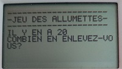

Tout commença au lycée, pour passer le temps durant l’éternité que représenter la philosophie, ce futur développeur
plutôt axé sur les matières scientifiques se pencha sur la création d’un passe-temps, la fabrication d’un petit jeux qui se nomma “allumettes”.
l’étincelle de la passion se créa.
Cependant l’une des innombrabres passions qui ennivrait se développeur prenna le desssus : la pâtisserie. Les années passèrent et se qui
semblait n’être qu’un lointain souvenir émerga de nouveau !
La Terre, souffrant d’une épidémie, n’épargna pas ce développeur des complications subit. Devant son ordinateur, une petite voix lui dit : “Dit moi jeune pâtissier, as-tu oublié tes origines ? Il fut un temps d’autres passions t’anima, ne pourrait tu pas concilier les deux ?” Le jeune pâtissier, effrayé mais animé de tout son courage débuta l’apprentissage du développement de site pour partager au monde entier son amour pour la pâtisserie. les bases créées, il décida de continuer à améliorer ses compétences, jour après jour, pour devenir non pas une recette parmis tant d’autres mais L’unique recette.